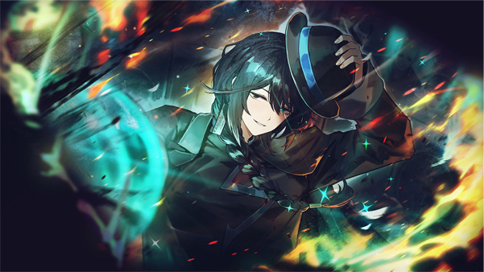
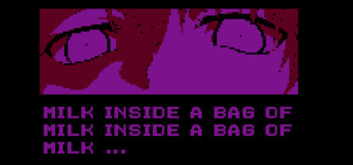
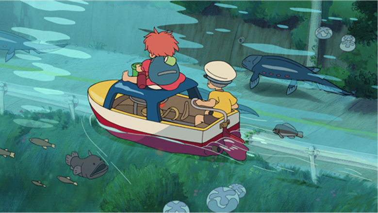

The first group I’ll bring up is Project Moon, a Korean game studio who are focused on the fictional setting taking place in the City. They’ve made 3 games, a web comic, and a web novel relating to the series, and as of now it’s their primary focus. There are multiple aspects of the franchise I like, but the art of the games is one of the major reasons I enjoy it, even if sometimes it’s a bit gory or even silly sometimes. In their most recent game, Limbus Company, I enjoy the way they use colors and lighting in order to create contrast in their art and vfx. A majority of the time, the designs would have more muted colors and would depend more on brighter colors in other aspects related to the compositions of artworks they’re in, or when they’re animated in game, the vfx does more of the work in order to make a contrast in the color.

The second person I’ll bring up is Nikita Kryukov, a musical composer and game developer who’s most known for his milk game series, with the game I’m talking about here being Milk Inside a Bag of Milk Inside a Bag of Milk. It’s a visual novel which caught my eye the first time I had seen it, with the first game’s art style being more appealing to me than the sequel due to how different it was from other things I’ve seen before. The use of what I believe is a filter over regular images, were colored in with hues of purple and black in order to make things harsher to look at, and the way the images and sprites are pixelated can also make it harder to tell what exactly you’re looking at, even if you know what it’s meant to be. The music is also made to complement the visuals of the game, which helps with giving it more of an unsettling and surreal feeling even when all that’s happening in reality is someone getting milk from the store. Overall, even though it’s relatively simple, and I could see reasons why people would dislike the art style of the game, I still enjoyed it and I think it does well at giving the feeling the creator wanted to convey.

The last group of people I’ll bring up are Studio Ghibli, whose work mostly consists of 2D animated movies. While I can’t say I’ve watched one of their movies for a while, I still do think about their art for a surprising amount considering how forgetful I am, with Ponyo being one of the movies I still remember multiple scenes of when the last time I’ve seen the movie was when I was a child. It’s likely because I just enjoy different sceneries that have to do with water, and the composition of the underwater scenes, how they drew the effect of light being affected by the water, the animation of the movement of fluid itself, or even just the way they drew different materials being wet was all satisfying for me to look at. I think the skill being presented here does lie mostly in composition and knowing how to effectively use details to their advantage.
I learned how to upload images, make hyperlinks, and use containers to some extent in order to align the images and text in the way I wanted to. I also learned that things I thought were simple were actually harder than I thought, because I didn't expect to need to go into a completely unrelated topic just to have text be on the right of an image. Image sizing was another thing I had to learn about, and I learned the different advantages of choosing different file types to load onto a website. However, I'm still not sure what causes the images to change shape when put inside a container, since I thought they would be the same width at the end.
They are very gaming related and anime-adjacent (besides Ghibli which is actually anime), which makes me think I should try to diversify my tastes too if I want to try to make designs that can appeal to more people.
I thought it could be important to include how the image was showing off what I was trying to talk about, but it ends up making the alt text feel unnecessarily long anyways, so I might just say what the image is next time I write alt text.